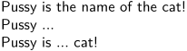
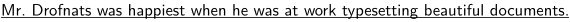
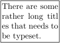

Contents
Cropping text
There are some rare cases in which it is useful to truncate a line of text and discard some of it.
\doboundtext
Sometimes there is not enough room to show the complete (line of) text. In such a situation we can strip of some characters by using
\doboundtext {text} {width} {sentinel}
When the text is wider than the given width, it's split and the third argument (sentinel) is appended. As much text as possible is printed.
An example
\doboundtext{My entire inheritance goes to my beloved cat Pussy!}{60mm}{...}
and it's result
\limitatetext
A bit more beautiful alternative for the previous command is \limitatetext. This command takes care of word boundaries, so that only complete words will appear in the final (cropped) text.
\limitatetext {text} {width} {sentinel} \limitatetext {text} {-width} {prelude} \limitatetext {text} {width1 , width2} {symbol}
When no width is given, the whole text becomes available. A negative value crops the beginning and the text starts with the prelude. Sentinel and prelude are both optional. Just look at the example, to see what happens, if you call the macro with two positive dimensions...
Example:
\limitatetext {Pussy is the name of the cat!}{38mm}{...}\par \limitatetext {Pussy is the name of the cat!}{-38mm}{...}\par \limitatetext {Pussy is the name of the cat!}{12mm, 12mm}{...}
leads to
- 
Both commands have their range of application.
\limitatetext is more robust (using grouping tokens like
\underbar is possible), while \doboundtext works better
on text that cannot be hyphenated.
\limitatefirstline
In ConTeXt versions newer than 07.09.2005 there is also a command called \limitatefirstline, which acts nearly like \doboundtext, but at a more robust level. This macro first tries to break the given text at character level. It uses nearly the same breaking mechanism as \limitatetext, so it shares the problem with nonbreakable text. But in contrast to \limitatetext it has a second mechanism, that is only used, if the prior one fails or if the result of breaking is wasting too much space. This fail safe mechanism "simply" clips (no breaking at all) the text to the desired measures. This is done without any consideration to character boundaries. So you must live with the fact, that the last character can be cut off at any possible place.
\limitatefirstline {text} {width} {sentinel}
Example:
\limitatefirstline {\underbar{Mr.~Drofnats was happiest when he was at work% typesetting beautiful documents.}{109mm}{\unknown}
- 
In this example breaking is successful (right after the word typesetting),
but the gap between the breaking point and the given width is too big.
So clipping is used here.
A direct comparison
| It's all in the garden. | 0123456789 | \underbar{In a bar, under the sea} | |
| \doboundtext |
|
not possible | |
| \limitatetext |
|
||
| \limitatefirstline |
|
|
|
Fitting text
You can fit text into a box by:
\def\HowStrange#1{#1\ifx#1\blankspace\else\allowbreak\fi} \framed [width=2cm,align={normal,verytolerant,stretch}] {\handletokens There are some rather long titles that needs to be typeset.\with\HowStrange}
- 
There is also similar facility for verbatim text in Verbatim with line breaks and Wrapping section.
See also
- If you meant to crop a page to some text, see \startTEXpage